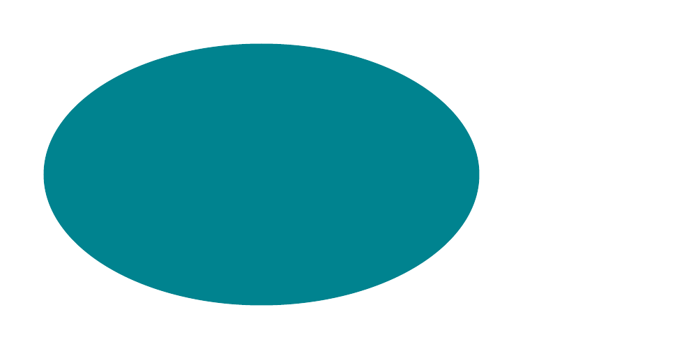
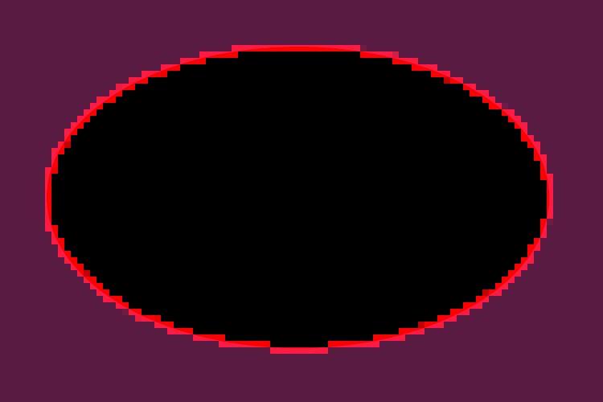
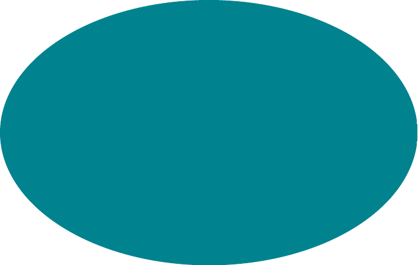
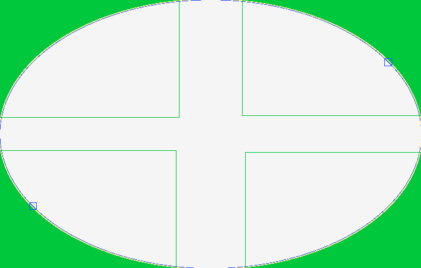

clip-path: ellipse() — 100.00% all categories ↑
PASS 0.24% clip-path-ellipse · distinct-radiiColorValueΔE 3.4


diff colours:MissingExtraColorErrGeomShiftAA edgeMatchAA / edge-jitter = cross-rasterizer measurement ceiling, not a bug.
why: fill recolour ΔRGB(-19,-9,-8) (ΔE 3.4)
clip-path: ellipse() clips a solid rectangle to a centered ellipse with distinct x/y radii. CSS clip-path on boxes is unsupported.
source · cases/clip-mask/clip-path-ellipse.html
1<!DOCTYPE html>
2<html lang="en">
3<head>
4<meta charset="utf-8">
5<title>clip-path ellipse</title>
6<style>
7 @page { size: 317px 160px; margin: 0; }
8 html { font-family: ParitySans; line-height: 1.5; }
9 * { margin: 0; box-sizing: border-box; }
10 html, body { background: #ffffff; }
11 .box {
12 width: 240px;
13 height: 160px;
14 background-color: #00838f;
15 /* Clip the rectangle to a centered ellipse with distinct x/y radii. */
16 clip-path: ellipse(100px 60px at 120px 80px);
17 }
18</style>
19</head>
20<body>
21 <div class="box"></div>
22</body>
23</html>
PASS 0.22% r2-clip-path-ellipse-default-radii · ellipse-default-radiiColorValueΔE 3.7



diff colours:MissingExtraColorErrGeomShiftAA edgeMatchAA / edge-jitter = cross-rasterizer measurement ceiling, not a bug.
why: fill recolour ΔRGB(-21,-10,-9) (ΔE 3.7)
ellipse() default radii must resolve: A single colored box isolates the clip geometry without text or external assets. Catches wrong implementation: Parser or renderer only handles the simplest existing basic-shape subset.
source · cases/clip-mask/r2-clip-path-ellipse-default-radii.html
1<!DOCTYPE html>
2<html lang="en">
3<head>
4<meta charset="utf-8">
5<title>r2 clip path ellipse default radii</title>
6<style>
7 @page { size: 220px 140px; margin: 0; }
8 html { font-family: ParitySans; line-height: 1.5; }
9 * { margin: 0; box-sizing: border-box; }
10 html, body { background: #ffffff; }
11 .box { width: 220px; height: 140px; background: #00838f; clip-path: ellipse(); }
12</style>
13</head>
14<body>
15 <div class="box"></div>
16</body>
17</html>